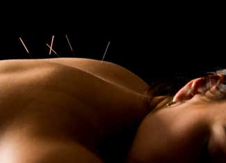

Introduction To Acupuncture
How it works, its safety, what it treats and where to find a licensed practitioner.
By Michael Castleman
August 15, 2008
According to legend, an arrow wounded an ancient Chinese soldier who was ill. The wound healed, and oddly, so did his illness. Intrigued, Chinese physicians began recording the places where stabbing wounds produced improbable healing. Their observations became acupuncture, Chinese needle therapy. After more than 2,000 years, this “alternative” therapy is more popular than ever worldwide.
Acupuncture is based on qi, the life force Chinese medicine says circulates around the body along paths called meridians. Like qi, the 14 meridians are invisible. But they pass close to the skin surface at spots (“points”) where insertion of needles or firm finger pressure (acupressure) changes the flow of qi, and heals illness.
Because the meridians are invisible, critics have dismissed acupuncture as mysticism. But many studies demonstrate its effectiveness. According to the National Institutes of Health (NIH), the primary Federal agency in the U.S. for conducting and supporting medical research, “The data supporting acupuncture are as strong as those for many accepted Western medical therapies.”
How does acupuncture work?
That’s not entirely clear. But the needles stimulate the nervous system, triggering release of such compounds as endorphins, the body’s own pain-relievers - hence acupuncture’s success treating pain. According to the NIH, “Considerable evidence supports the claim that opioid peptides (opiumlike compounds) are released during acupuncture and that its analgesic (pain-relieving) effects are explained by their action.”
Acupuncture is safe - if needles are sterilized. Two British studies involving more than 65,000 people show that side effects are rare and minor, mostly slight pain on needle insertion and slight bleeding at needling sites. There were no serious side effects. The NIH agrees: “Acupuncture’s incidence of adverse reactions is substantially lower than that of many drugs and accepted medical procedures for the same conditions.”
What does it treat?
Acupuncture is most effective for pain conditions:
Arthritis. German researchers gave 294 people suffering arthritis of the knee true acupuncture, sham acupuncture (needles at non-points), or a placebo. After eight weeks the true acupuncture group reported the most pain relief.
Back pain. University of Maryland researchers analyzed 33 studies of true vs. sham acupuncture and placebo treatment for back pain. True acupuncture worked best.
Headache. Researchers at Memorial Sloan-Kettering Cancer Center in New York treated 401 chronic headache sufferers with acupuncture or standard care. The acupuncture group reported significantly greater pain relief.
Dental pain. British researchers analyzed 16 studies. Their conclusion: Acupuncture is an effective treatment for dental pain.
Labor pain. Swedish researchers gave 90 laboring women pain medication or the drugs plus acupuncture. The acupuncture group reported significantly less pain.
Post-surgical pain. University of Maryland scientists monitored use of pain medication after wisdom tooth extraction. Compared with those who did not have acupuncture, those who did used only half as much medication.
Fibromyalgia. Mayo Clinic scientists gave 50 fibromyalgia sufferers either true or sham acupuncture. After one month, those receiving true acupuncture reported significantly less pain, fatigue and anxiety.
Chronic pain. British researchers analyzed five studies of chronic knee pain involving 1,334 people. True acupuncture provided significantly more relief than sham acupuncture or placebo.
Acupuncture also treats other conditions:
Addictions. Norwegian researchers gave 46 smokers either true or sham acupuncture. Those receiving true acupuncture smoked significantly fewer cigarettes. The effect lasted five years. Yale scientists gave 620 cocaine addicts either acupuncture or relaxation training. After 40 treatments over eight weeks, the acupuncture group was using significantly less cocaine.
Nausea. Acupuncture relieves nausea caused by surgery and chemotherapy. University of California, San Francisco, scientists have shown that acupuncture significantly reduces post-surgical nausea. And British researchers have shown that acupressure minimizes chemotherapy-induced nausea.
Premenstrual syndrome. Chinese scientists analyzed eight studies involving 807 women. In seven, acupuncture provided greater relief than either Western drugs or Chinese herbs.
Recurrent urinary tract infection. Norwegian researchers treated 67 recurrent UTI sufferers with true or sham acupuncture or no treatment. After six months, 64 percent of the no-treatment group had recurrences, and 42 percent of the sham acupuncture group, but only 15 percent of those receiving true acupuncture.
Asthma. Chinese researchers treated 104 asthma sufferers with standard medication or drugs plus acupuncture (10 sessions). After six months, the acupuncture group reported fewer asthma attacks and less need for drugs.
Angina. Japanese researchers have shown that acupuncture opens the coronary arteries 69 percent. As these arteries open, chest pain from angina decreases. Danish researchers found that acupuncture reduced the need for angina surgery by 70 percent and cut hospitalizations 90 percent.
Stroke. Compared with standard stroke rehabilitation, Chinese researchers have shown that adding acupuncture produces significantly greater recovery of function. University of Arizona researchers reviewed studies of acupuncture for stroke rehabilitation and concluded “acupuncture is probably much more effective than has generally been reported.”
How do I get started?
Read firsthand reports of acupuncture success stories for neck and back pain, insomnia and more.
Skilled acupuncturists generally gets results in six to 12 sessions, says Efrem Korngold, L.Ac. (licensed acupuncturist), O.M.D. (Oriental medical doctor), co-author with Harriet Beinfeild, L.Ac., of Between Heaven and Earth: A Guide to Chinese Medicine.
Acupuncturists are licensed in most states. For information, visit Acupuncture.com. Under “Practitioners/Students,” click “Laws and Regulations” for links to state licensing regulations.
To find an acupuncturist near you, visit the National Certification Commission for Acupuncture and Oriental Medicine. Click Find a Practitioner. Or for referrals to M.D.s who use acupuncture, visit the American Academy of Medical Acupuncture. Click Find an Acupuncturist Near You.
Acupuncture typically requires payment out of pocket, but some health insurers cover it. Check your policy or ask your insurer.
Have you tried acupuncture? Whether you have or you’re just curious, share your thoughts in the comments section below.

ISTOCKPHOTO
Acupuncture has been effectively used to relieve pain for centuries.
|
|
|